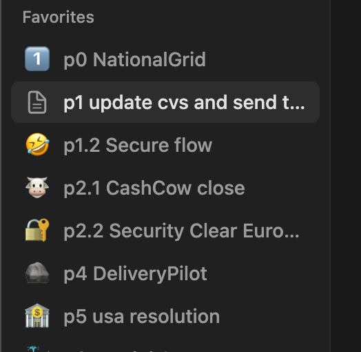
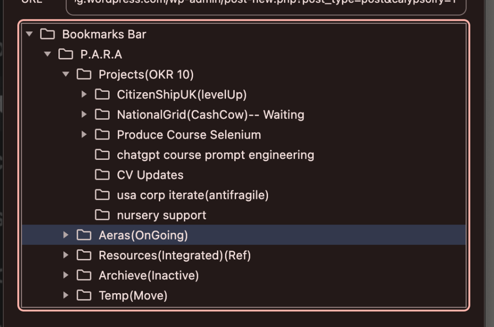
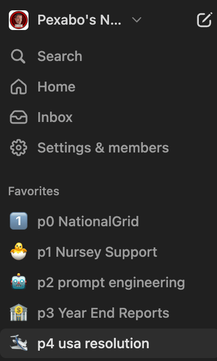
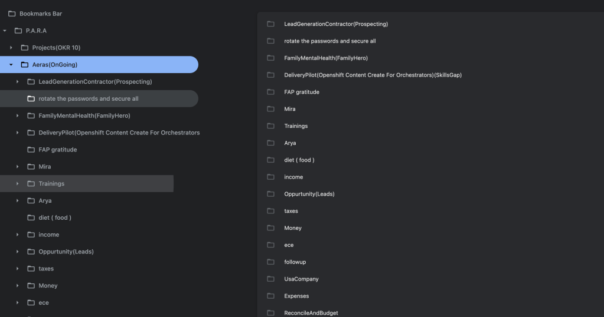
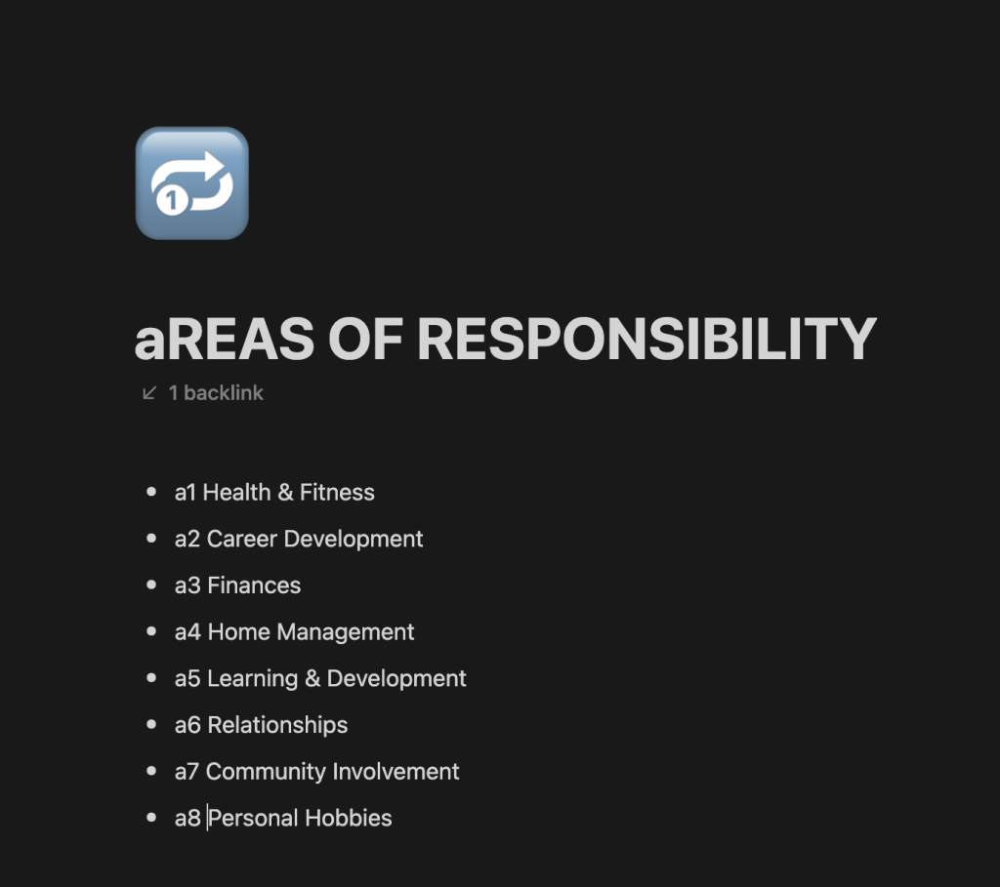
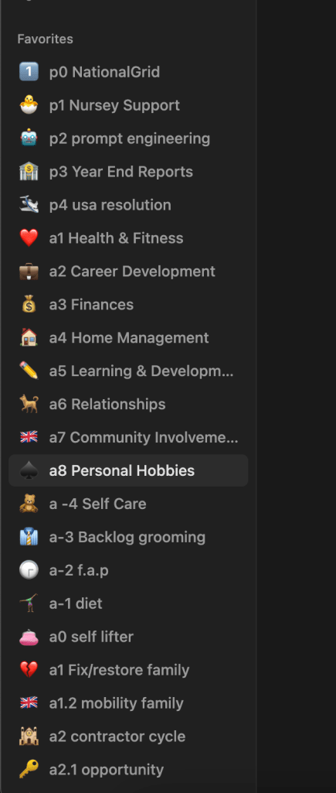
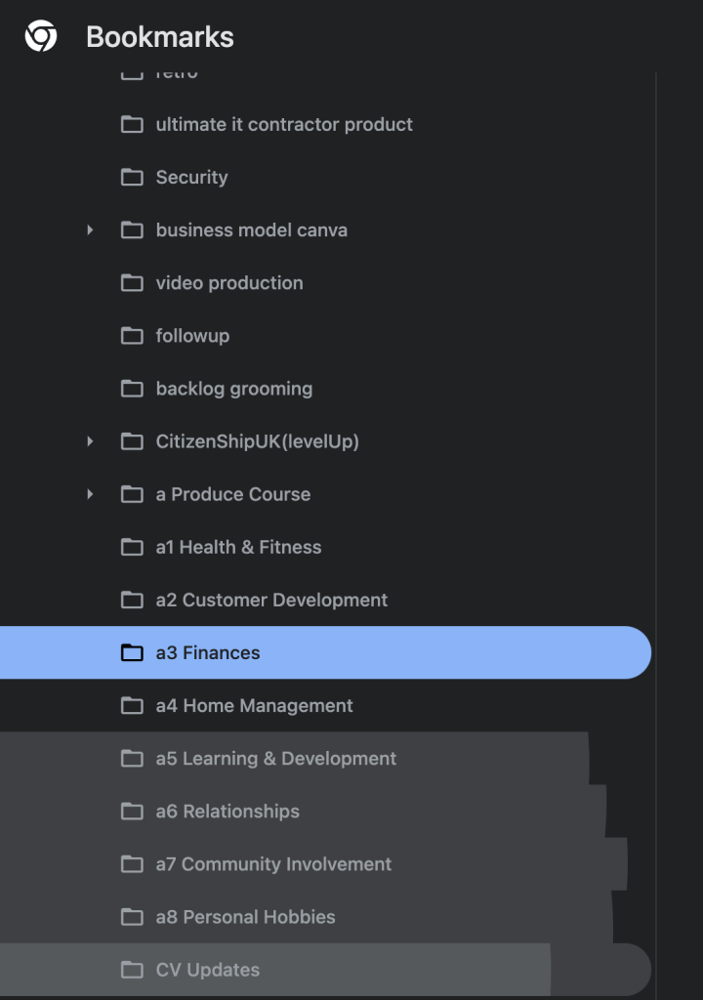
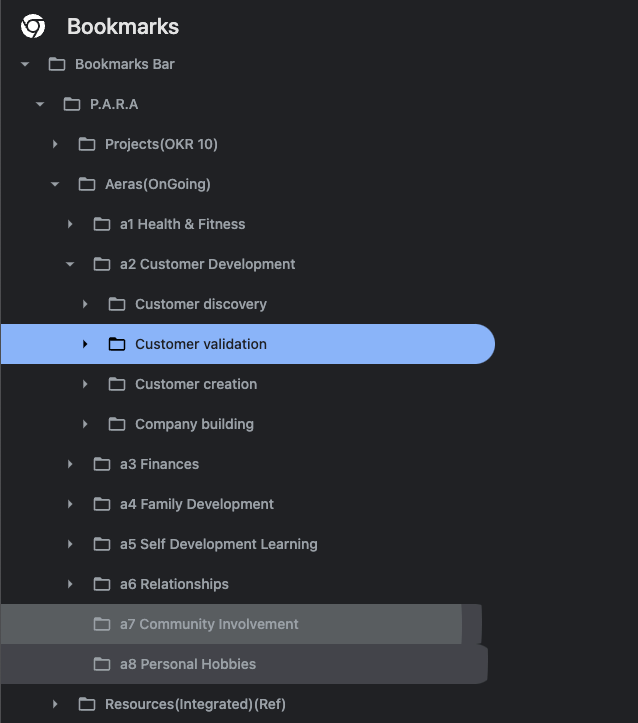

Project compare bookmarks and build based on it


max 5 projects makes sense

The PARA method by Tiago Forte stands for Projects, Areas, Resources, and Archives. It's designed to help you organize your work and personal life. Here's a breakdown of how you might think about the number of projects and areas you should have:
Projects
Definition: Short-term efforts with a clear outcome.
Guidelines:
-
Current Projects: You should have a manageable number of active projects at any given time. This usually means no more than 5-7 active projects. This limit helps ensure that you can give each project the attention it deserves without becoming overwhelmed.
-
Project List: Keep a master list of all projects, both current and future. Regularly review and prioritize them.
Areas
Definition: Long-term responsibilities or interests without a clear end date.
Guidelines:
-
Personal Areas: Typical personal areas might include Health, Finances, Relationships, Home Maintenance, Personal Development, etc. The number can vary, but usually, people have around 5-10 personal areas.
-
Professional Areas: Depending on your job and responsibilities, you might have areas like Client Management, Team Leadership, Marketing, Product Development, etc. Again, this might range from 5-10 areas.
-
Review Regularly: Regularly review your areas to ensure they align with your long-term goals and responsibilities. This helps in maintaining focus and adjusting to changing priorities.
Tips for Managing Projects and Areas
-
Consistency: Keep your project and area lists up to date. Regular reviews (weekly, monthly, quarterly) can help in staying organized.
-
Prioritization: Prioritize projects and tasks within each area based on urgency and importance.
-
Flexibility: Be flexible in adjusting the number of projects and areas as your life and work evolve. There's no strict number; it’s about finding what works best for you.
Example Breakdown
Projects:
-
Complete client XYZ’s report.
-
Organize family vacation.
-
Launch new website feature.
-
Prepare for upcoming conference presentation.
-
Renovate the kitchen.
Areas:
-
Health & Fitness
-
Career Development
-
Finances
-
Home Management
-
Learning & Development
-
Relationships
-
Community Involvement
-
Personal Hobbies
By keeping your list of projects and areas concise and focused, you can maintain better control over your tasks and responsibilities, leading to increased productivity and reduced stress.
List too big

rebooted to a more stable top one

emojis and drag drop the top ones

Different type of resources
Resources in the PARA method are materials, references, and tools that support your projects and areas but do not require immediate action. These are things you might need to refer to, learn from, or use in the future. Here are some examples of resources:
Resources Examples
Personal Development:
-
Books and Articles: Collection of eBooks, PDFs, articles, and blog posts about personal development, productivity, and self-help.
-
Courses and Tutorials: Online courses or tutorials on platforms like Coursera, Udemy, or LinkedIn Learning.
Professional Development:
-
Industry Reports: Market research reports, white papers, and industry analysis documents.
-
Training Materials: Company training manuals, guides, and best practice documents.
-
Conference Notes: Notes and materials from conferences, webinars, and seminars.
Health & Fitness:
-
Workout Plans: PDFs or links to workout routines, fitness challenges, or exercise guides.
-
Diet Plans: Meal plans, nutrition guides, and healthy recipes.
-
Medical Information: Articles, books, and research papers on health topics of interest.
Finances:
-
Investment Guides: Books and articles on investing, stock market tips, and financial planning.
-
Budget Templates: Excel sheets, apps, or templates for personal or business budgeting.
-
Tax Documents: Guides and resources on tax preparation and filing.
Home Management:
-
DIY Guides: Articles and videos on home improvement, repair, and DIY projects.
-
Maintenance Schedules: Checklists and schedules for home maintenance tasks.
-
Interior Design Ideas: Inspirational photos, design plans, and décor tips.
Learning & Education:
-
Academic Papers: Research papers, thesis documents, and academic articles.
-
Language Learning: Resources for learning new languages, such as apps, vocabulary lists, and grammar guides.
-
Skill Development: Resources for developing new skills, like coding tutorials, photography guides, or cooking recipes.
Technology:
-
User Manuals: Manuals and guides for software, hardware, or devices you use.
-
Software Tutorials: Video tutorials, online guides, and eBooks on using specific software.
-
Code Repositories: Collections of code snippets, GitHub repositories, and programming resources.
Travel:
-
Destination Guides: Travel guides, blog posts, and articles about potential travel destinations.
-
Packing Lists: Checklists for packing and preparing for different types of trips.
-
Maps and Itineraries: Maps, suggested itineraries, and travel routes.
Organizing Resources
-
Digital Storage: Use cloud storage solutions like Google Drive, Dropbox, or OneDrive to organize and access your digital resources.
-
Tagging and Categorizing: Use tags, categories, or folders to make it easier to find resources when needed.
-
Regular Review: Periodically review your resources to ensure they are still relevant and useful. Discard or archive outdated materials.
By organizing your resources effectively, you can quickly access the information and tools you need to support your projects and areas, making your workflow smoother and more efficient.
A Lot to paste to go in

now they look much better categorised

Imported from rifaterdemsahin.com · 2024